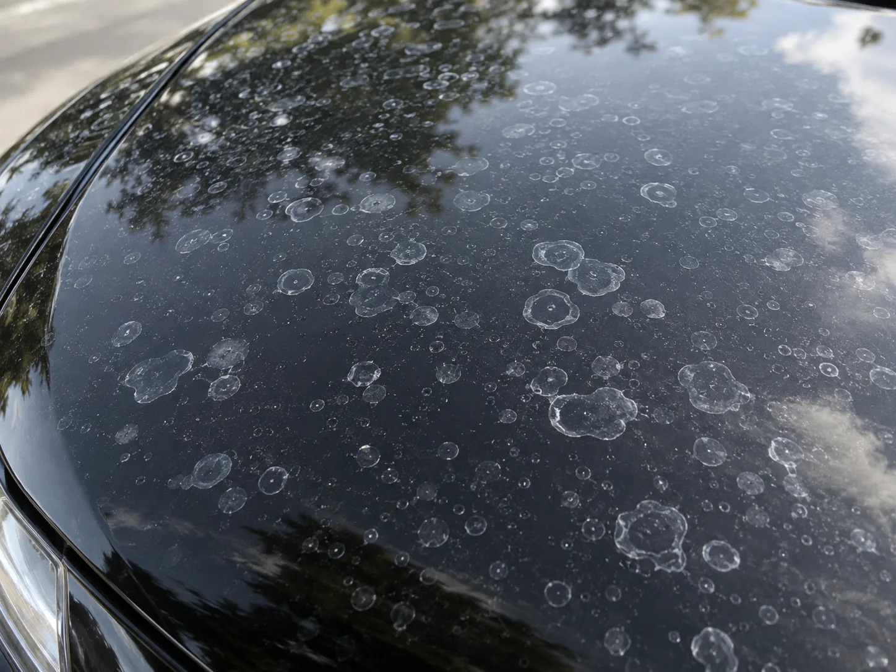
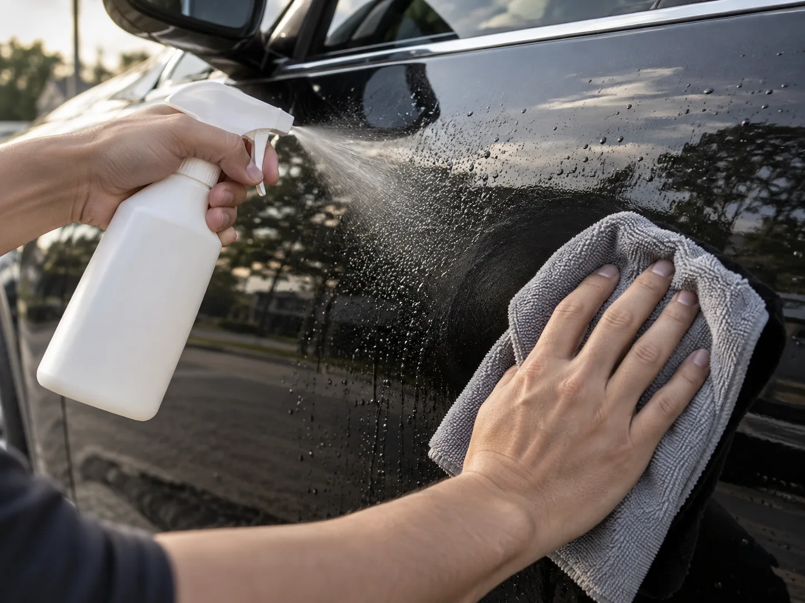
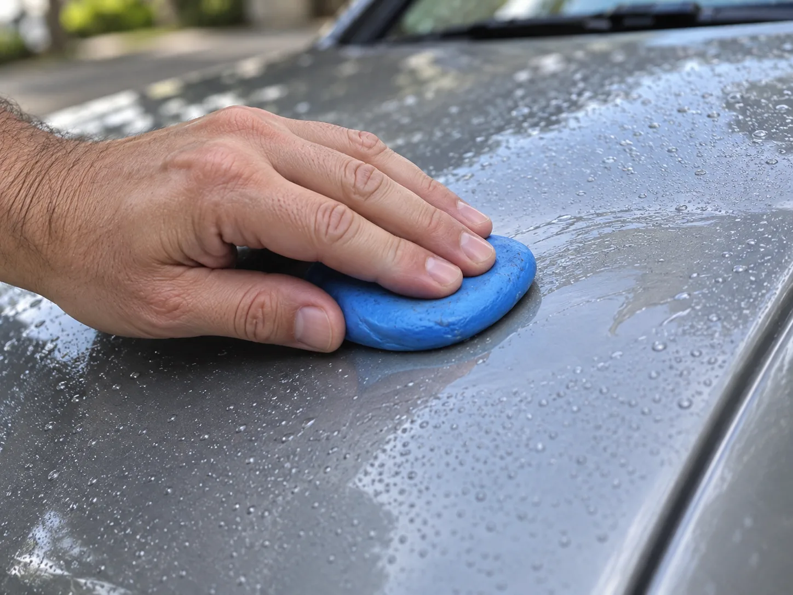
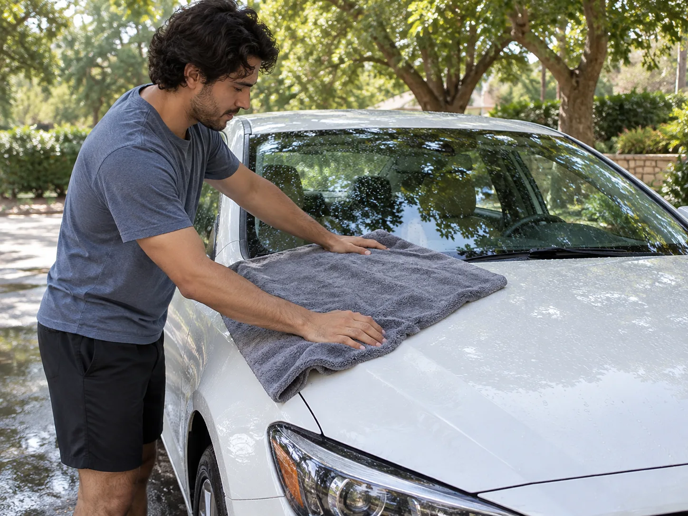

▲ 물이 마르는 과정에서 남는 미네랄 자국이 워터스팟의 정체다 ⓒ CarPrism (AI 생성 이미지)
정성 들여 세차를 마치고 흐뭇하게 돌아섰는데, 다음 날 보니 보닛과 유리에 하얀 동그라미들이 잔뜩 남아있다. 분명 깨끗이 헹궜는데 왜 이런 자국이 생기는 걸까.
이 자국의 정체는 워터스팟(물자국)이다. 단순히 지저분해 보이는 걸로 끝나면 다행이지만, 오래 방치하면 도장면 자체가 부식되는 '에칭(Etching)' 손상으로 이어질 수 있다. 원리를 알면 제거도, 예방도 훨씬 쉬워진다.
1. 워터스팟은 왜 생기나 — 물이 마르며 남기는 미네랄
수돗물이든 빗물이든, 물에는 눈에 보이지 않는 미네랄 성분이 녹아있다. 칼슘, 마그네슘, 탄산칼슘(석회질) 등이 대표적이며, 지역마다 수질에 따라 농도가 다르다.
세차 후 도장면에 물방울이 남은 채로 햇볕이나 바람에 자연 건조되면, 물은 증발해 사라지지만 그 안에 녹아있던 미네랄은 표면에 그대로 남는다. 물방울이 맺혔던 동그란 테두리를 따라 흰색 얼룩이 남는 이유다.
| 요인 | 내용 |
|---|---|
| 경수(硬水) | 칼슘·마그네슘 농도가 높은 물로 세차하면 미네랄 잔여물이 더 많이 남음 |
| 직사광선 아래 건조 | 물방울이 빠르게 증발하며 미네랄이 응축되어 자국이 더 진하게 남음 |
| 빗물 방치 | 빗물에 섞인 대기 오염 물질이 함께 마르면서 얼룩을 남길 수 있음 |
| 스프링클러 물 | 주차 중 잔디 스프링클러 물이 튀어 마르는 경우도 흔한 원인 |
▲ 물방울이 맺혔던 테두리를 따라 미네랄이 원형으로 남는 것이 워터스팟의 전형적인 모습이다 ⓒ CarPrism (AI 생성 이미지)
2. 방치하면 왜 위험한가 — 자국을 넘어 '에칭' 부식으로
워터스팟을 그냥 미관상 문제로만 여기면 곤란하다. 시간이 지날수록 표면의 미네랄이 도장면(클리어코트) 속으로 서서히 파고들어, 화학적으로 표면을 손상시키는 반응이 일어날 수 있다. 이를 에칭(Etching)이라 부른다.
📍 자국(스테인)과 부식(에칭)은 다르다
디테일링 업계에서는 워터스팟을 두 단계로 구분한다. 1단계는 표면 위에 얹혀 있는 미네랄 얼룩으로, 세차나 클레이바로 비교적 쉽게 제거된다. 2단계는 미네랄의 부식성 성분이 클리어코트 안으로 스며들어 만든 물리적 패임(에칭)으로, 표면을 문질러 닦아내는 정도로는 사라지지 않는다. 에칭 단계까지 진행되면 폴리싱(연마) 작업으로 클리어코트 표면을 갈아내야만 흔적이 없어진다.
즉 워터스팟을 발견했을 때 얼마나 빨리 대응하느냐가 관건이다. 생긴 지 얼마 안 된 자국은 순한 방법으로도 지워지지만, 몇 주~몇 달간 방치된 자국은 이미 도장면 속에 자리 잡았을 가능성이 크다.
3. 올바른 제거법 — 식초 희석액부터 클레이바까지
워터스팟 발견 즉시 시도해볼 수 있는 방법은 단계별로 나뉜다. 순한 방법부터 시도한 뒤, 효과가 없으면 다음 단계로 넘어가는 것이 도장면 손상을 최소화하는 순서다.
✅ 단계별 제거 방법
· 1단계 — 식초 희석액: 흰 식초와 증류수를 1:1로 섞어 스프레이로 뿌린 뒤 마이크로화이버 천으로 문지르지 말고 가볍게 눌러 닦아낸다. 식초의 약산성이 미네랄을 분해해 표면 위 자국을 녹여낸다
· 2단계 — 워터스팟 전용 리무버: 식초로도 안 지워지면 시중 디테일링 제품(워터스팟 리무버)을 사용, 제품 설명서에 따라 도포 후 헹궈낸다
· 3단계 — 클레이바(점토바): 표면에 윤활 스프레이를 충분히 뿌린 뒤 클레이바를 가볍게 밀어 미네랄 입자를 물리적으로 걷어낸다. 화학적으로 녹지 않는 표면 부착물에 효과적
· 4단계 — 폴리싱(광택 작업): 위 방법으로도 자국이 남으면 이미 에칭이 진행된 것으로, 폴리셔로 클리어코트 표면을 얕게 연마해 평탄화해야 함(전문 업체 권장)

▲ 식초와 증류수를 1:1로 희석한 용액은 생긴 지 얼마 안 된 워터스팟에 가장 먼저 시도해볼 만한 방법이다 ⓒ CarPrism (AI 생성 이미지)
📍 식초를 쓸 때 주의할 점
식초는 산성이기 때문에 원액을 그대로 쓰거나 오래 방치하면 오히려 도장면이나 크롬 부품을 손상시킬 수 있다. 반드시 증류수로 희석하고, 뿌린 뒤 오래 두지 말고 바로 닦아낸 다음 깨끗한 물로 헹궈야 한다. 세차 전문 업체들의 워터스팟 관리 노하우를 더 자세히 확인하고 싶다면 아래에서 볼 수 있다. 불스원 워터스팟 관리법 바로가기
4. 클레이바가 필요한 경우 — 화학적으로 안 녹는 자국
식초나 전용 리무버로도 자국이 남는다면, 미네랄이 이미 표면에 단단히 들러붙어 화학적 용해만으로는 부족한 상태일 수 있다. 이럴 때 사용하는 것이 클레이바(점토바)다.
클레이바는 부드러운 점토 형태의 소재로, 도장면 위에 윤활제를 충분히 뿌린 뒤 미끄러뜨리듯 문질러 표면에 붙은 이물질을 물리적으로 흡착·제거하는 방식이다. 압력을 세게 주지 않아도 되며, 오히려 무리하게 힘을 주면 미세한 스크래치(스월 마크)를 남길 수 있어 주의가 필요하다.

▲ 클레이바는 화학적으로 녹지 않는 미네랄 입자를 물리적으로 걷어내는 방식이다 ⓒ CarPrism (AI 생성 이미지)
✅ 클레이바 사용 시 체크포인트
· 반드시 전용 윤활 스프레이(클레이 루브)를 충분히 뿌린 뒤 사용 — 마른 표면에 문지르면 스크래치 위험
· 클레이바가 바닥에 떨어지면 이물질이 묻은 것이므로 재사용하지 말 것
· 작업 후에는 표면이 매끈해졌는지 손으로 문질러 확인(비닐 위를 만지는 듯한 촉감이면 완료)
· 클레이바로도 자국이 안 사라지면 에칭 단계로 진행됐을 가능성이 높음 — 폴리싱 검토
5. 재발을 막는 예방법 — 세차 직후 5분이 핵심
워터스팟은 제거보다 예방이 훨씬 쉽고 저렴하다. 몇 가지 습관만 바꿔도 발생 빈도를 크게 줄일 수 있다.

▲ 세차 직후 물기가 마르기 전에 타월로 닦아내는 것이 가장 확실한 예방법이다 ⓒ CarPrism (AI 생성 이미지)
✅ 워터스팟 예방 체크리스트
· 세차 직후 즉시 물기 제거 — 극세사 타월이나 워터블레이드로 물이 자연 건조되기 전에 닦아낼 것
· 그늘에서 세차하기 — 직사광선 아래는 물이 빨리 증발해 미네랄이 더 진하게 응축됨
· 가능하면 연수(정수)된 물 사용 — 세차장 중 연수기를 갖춘 곳을 이용하면 미네랄 잔여물 자체가 줄어듦
· 비 온 뒤 방치하지 않기 — 빗물이 마르기 전에 헹구거나 닦아낼 것
· 유리막·세라믹코팅 시공 — 표면 발수력이 높아지면 물방울이 맺히는 면적 자체가 줄어 워터스팟 발생이 줄어듦
📍 코팅이 워터스팟을 완전히 막아주진 않는다
유리막코팅이나 세라믹코팅은 표면 발수력을 높여 물방울이 빠르게 굴러떨어지게 하므로 워터스팟이 덜 생기고, 생기더라도 덜 진하게 남는 효과가 있다. 다만 코팅막 위에도 미네랄이 오래 방치되면 자국이 남을 수 있어, 코팅을 했더라도 세차 후 물기 제거 습관은 그대로 유지하는 것이 좋다. 왁스·유리막코팅·세라믹코팅의 원리와 비용 차이가 궁금하다면 아래 비교 기사를 참고할 수 있다. 왁스·유리막·세라믹코팅 비교 기사 보기
6. 요약
워터스팟은 물이 증발한 뒤 남는 칼슘·마그네슘 등 미네랄 자국이다. 초기에는 표면 위에 얹힌 얼룩에 불과하지만, 방치하면 미네랄이 클리어코트 속으로 파고들어 세차로 지워지지 않는 에칭(부식) 손상으로 진행될 수 있다.
제거는 순한 방법부터 단계적으로 시도하는 것이 원칙이다. 식초 희석액이나 전용 리무버로 대부분 해결되고, 표면에 단단히 붙은 자국은 클레이바로 물리적으로 걷어낼 수 있다. 이미 부식까지 진행됐다면 폴리싱 작업이 필요하다.
가장 확실한 대책은 예방이다. 세차 직후 물기를 바로 닦아내고, 그늘에서 세차하며, 유리막·세라믹코팅으로 발수력을 높이면 워터스팟이 생길 여지 자체를 크게 줄일 수 있다.